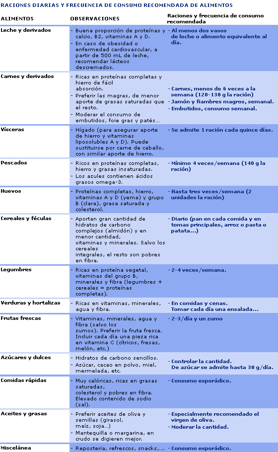
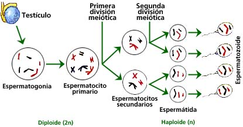
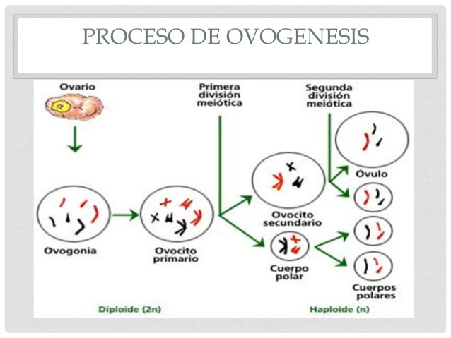

<ion-view view-title="Account">
  <ion-content>TABLA NUTRICIONAL

    <ion-list>
    <ion-toggle  ng-model="tabla nutricional">
    </ion-toggle>Patatas, arroz, pan, pan. integral y pasta.
Verduras y hortalizas. Frutas.
Aceite de oliva. Leche y derivados.
Pescados. Carnes magras, aves y.
huevos. Legumbres.
Frutos secos. Embutidos y carnes.
grasas. Dulces, snacks, refrescos.
Mantequilla, margarina y. bollería.
PRODUCTOS LÁCTEOS: El niño debe consumir leche (medio litro, al menos, al día). ...
CARNE: En general se abusa de la carne de cerdo, embutidos, salchichas y hamburguesas. ...
PESCADO
HUEVOS
PATATAS
LEGUMBRES
FRUTAS
VERDURAS Y ENSALADAS
    </ion-list>
    
    
  </ion-content>
</ion-view>
    